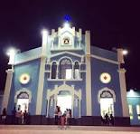

Morrinhos está localizado na região Norte do estado do Ceará, está situado numa faixa de transição entre o semiárido e o litoral. É cortado pelo rio Acaraú, o segundo maior rio do Estado. O município é destaque na produção de cera e pó cerífero extraído da carnaubeira, palmeira típica da região, sendo Morrinhos um dos maiores produtores do Ceará.
Um dos principais eventos da cidade é o Festival de Quadrilhas, pois reúne pessoas das regiões circunvizinhas, bem como de todo baixo-Acaraú. Resgatando a nossa cultura e estimulando aos jovens que residem no município em questão a fugir do desemprego e da violência que assolam a cidade. Acontece geralmente no mês de junho, e chama a atenção por abrir espaço para os músicos e artistas que moram aqui, não esquecendo das bandas de grande porte que sempre animam esse evento anual.
